界面世界模型 Solaris
Runway 的公开交互研究。X 帖子是发现入口；官方介绍与论文是技术依据。这里尚未确认 Solaris 专用开源库、API 或权重可用。
看来源与原理 ↓START HERE / SIX QUESTIONS
从原研究的方向，到现在能够运行和复用的基础。
Runway 的公开交互研究。X 帖子是发现入口；官方介绍与论文是技术依据。这里尚未确认 Solaris 专用开源库、API 或权重可用。
看来源与原理 ↓对象移动、尺寸、材质、光照、视角、测量、试穿、取样成工具、动作与关联响应、内容策展和转场。公开材料拆为 12 族、36 项。
查完整源能力 ↓拖动提供目标与连续输入；语义决定“放大、测量、移动还是触发联动”。源模型继续生成画面，我们用明确工具与规则更新状态。
看具体例子 ↓11 场景、35/36 受控映射、九任务、十记录备份，另有独立桌灯研究。已有操作、校验、撤销与恢复；没有复现任意视觉生成。
看实际产品 ↓空间方案、产品展示、资料教学、图像创作与受控任务流程。现有演示验证交互方法；商业内容与真实业务需要按任务接入。
看用途与缺口 ↓已有可维护代码、真实资产、操作样本和失败记录。以后从具体用户任务选能力，减少重复探索；当前不用继续凑满 36/36。
看复用与判断方法 ↓01 / SOURCE EFFECTS + OUR EFFECTS
左侧汇集 Solaris 的 13 个公开媒体场景，右侧展示我们 11 个已有场景及桌灯、真人参考两个补充入口。效果图使用完整、不透明的原图和实际页面截图；功能、原理、用途与边界继续保留在同一张图中。
当前：源效果。13 个公开媒体场景，包含 14 张论文过程图或官方封面；在图内向下滚动查看全部场景。

两组效果都来自同一张完整汇总图。打开完整 SVG ↗ · 进入全部 11 个可运行场景 ↓ · 桌灯研究 ↗ · 真人参考 ↗。下方保留完整可访问文字；0.17.0 原图存档 ↗。
以下是论文原过程图和官方封面，可逐张放大。进入官方回放与资料画廊 ↗。相关本地演示使用我们的资产、工具与规则，场景可能不同；两组效果的原理与验证范围见正文。
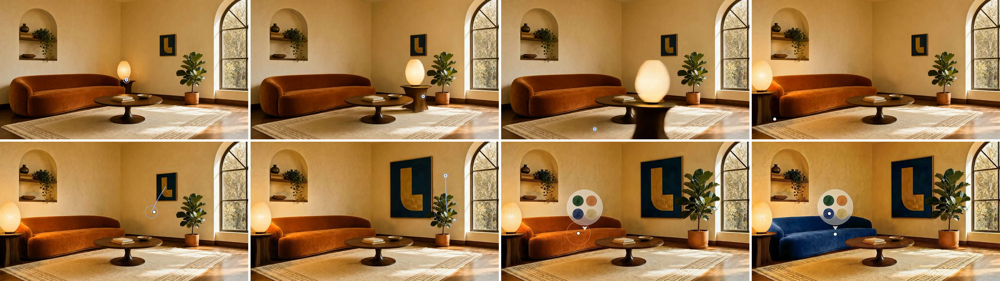
灯、画与植物的空间变化，沙发应用布料；保留整组原始过程帧。
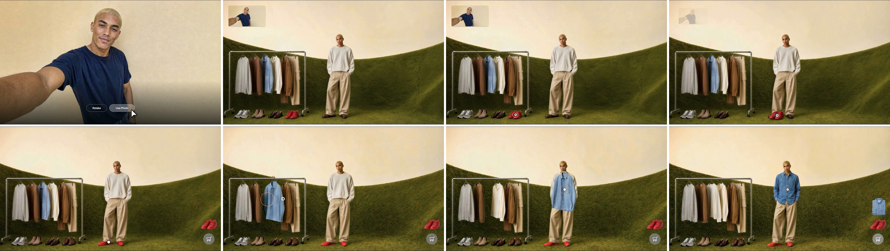
拖鞋、拖衣服到人像，发布者展示外观与购物车变化；本地 C19 购物联动尚未接入。
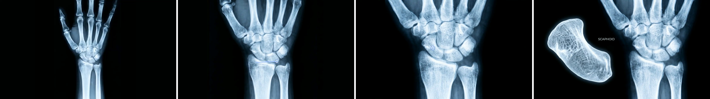
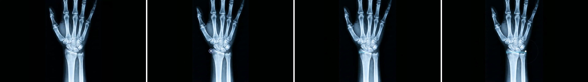
同一初始画面与拖动在不同语义下产生不同响应；读数画面不构成临床尺寸准确性证明。
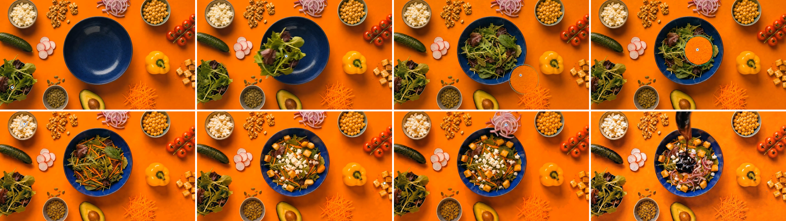
发布者展示食材进入碗与画面组合；我们的完整食材与有限刚体是另一条受控实现。
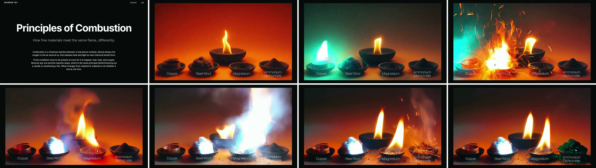
观察多种材料的可见变化；源视觉响应和本地教学计算均需按各自范围理解。
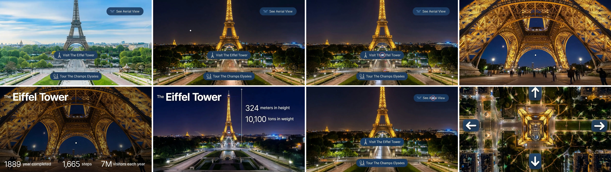
原图展示埃菲尔铁塔的时间、信息与观察方向；本地使用不同的授权白模资产。
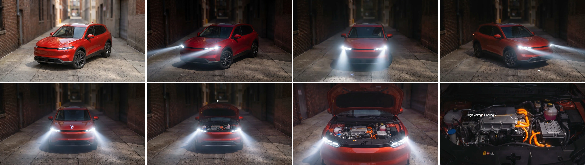
发布者展示产品角度与部件响应；本地展示授权概念车的有限部件和状态。
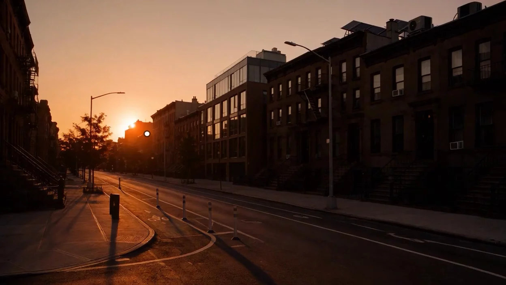
这里只展示原始播放器封面；光照联动的动态观察沿用既有记录，本次未重新播放。
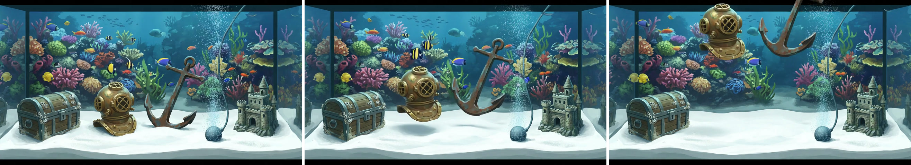
源图展示生成场景的浮起变化；本地仅对登记食材执行有限轨迹与归位。
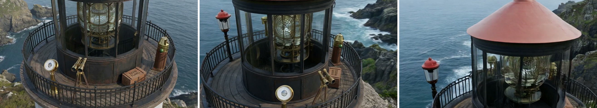
原材料提供相机运动指令，未明确完整鼠标手势轨迹；本地使用有限相机控制。
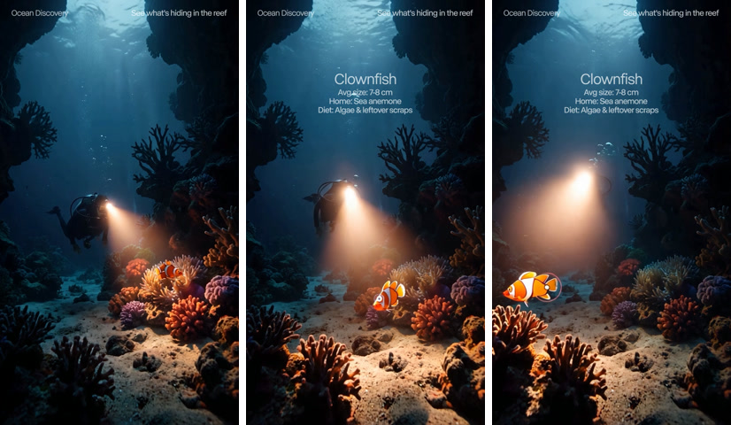
鱼的位置与潜水员发生关联变化；本地验证固定水层中的有限跟随、受阻与恢复。
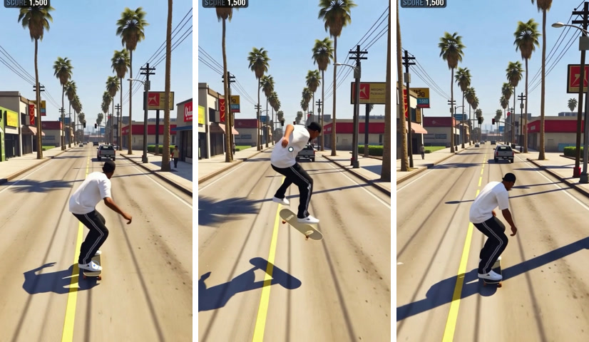
源图展示板与骑手联动的过程；本地使用有限骨架与轨迹，保留起落过程记录。
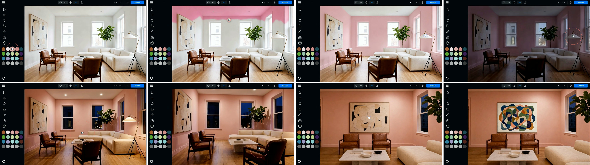
公开长场景包含墙色、时间、灯光、视点与画作修改；原图保留整体帧序列。
02 / TWO IMPLEMENTATION PATHS
相似的鼠标体验，可以由不同系统产生。把可见效果、内部方法和已验证结果分别看清。
公开方法将点击、拖动等历史输入与视觉上下文作为后续帧的条件，由语言模型解释意图、形成场景行为提示，再自回归生成交互画面。论文还介绍少步蒸馏与在自身生成输出上训练。
核心是视觉环境直接响应操作：改变一个对象时，后续画面的背景、遮挡、材质和光照也可能变化；同一手势由上下文决定含义，对象还可成为工具来源。36 项是我们对公开材料的研究拆分，既含示例也含文字与展望。
Solaris 是公开研究来源，本项目尚未确认专用开源库或可调用原模型。这是根据公开资料做的简化理解；每次鼠标移动的实际调用频率及未公开内部模块仍未知。官方目前提供 early-access 申请，本项目未接入或实测 Solaris；官方录像不证明持久对象 ID、精确三维结构、真实物理或商业流程。
用登记对象、明确工具与约束解释输入，维护可校验的场景状态，再绘制画面或执行有限仿真。稳定结果可以保存、恢复与比较。
Three.js 负责图形基础，Cannon-es 负责料理刚体求解；项目编写对象语义、控制、约束、事务、局部算法及流程。原模型、纹理和图像含第三方授权素材。
INPUT → MEANING → RESPONSE
鼠标是输入设备。值得研究的是：系统知道作用对象是什么，如何解释连续动作，如何让关联对象响应，并在结束后保留可用成果。只出现鼠标指针或动画，还不足以说明这些能力。
SOURCE / 12 FAMILIES · 36 ITEMS
不是 36 个独立手势，也不是官方保证的产品功能包。条目直接沿用研究清单，点编号可查原出处。
论文图与官方录像是发布者展示，非本项目实测；C36沿用既有视频观察，只确认可见鼠标、太阳与光照变化，按下/释放未知，本次未重新播放。文字项未核验对应回放；设想项不能当作已展示。各项“如何验证”和分析假设见研究清单。
公开图示不足以证明源系统具有稳定对象 ID、完整三维资产、真实标定、真实购物或长期一致性。源方法与当前限制见论文方法和官方介绍。
03 / ELEVEN SCENES
每张卡片都列出具体操作、验证目的和边界。三维试衣与真人参考属于同一个试衣场景。
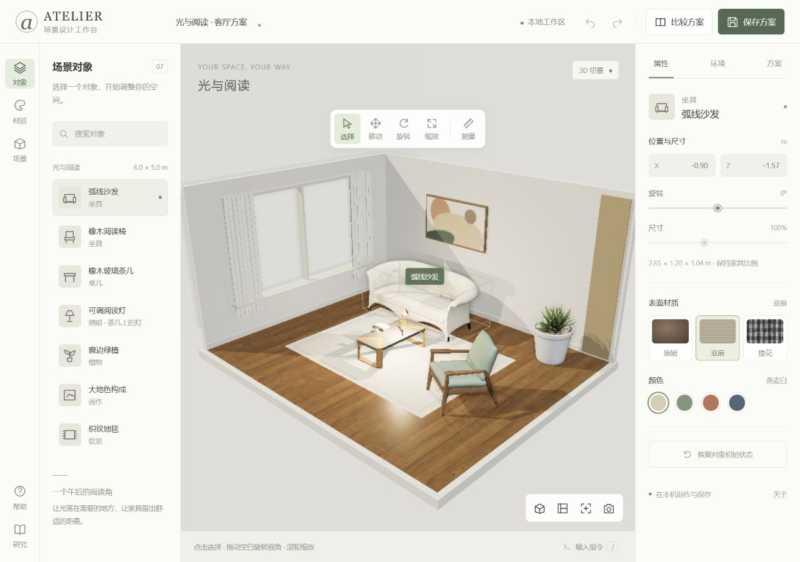
01 / C01–04 / C06–11 / C15–16 / C34 / C36
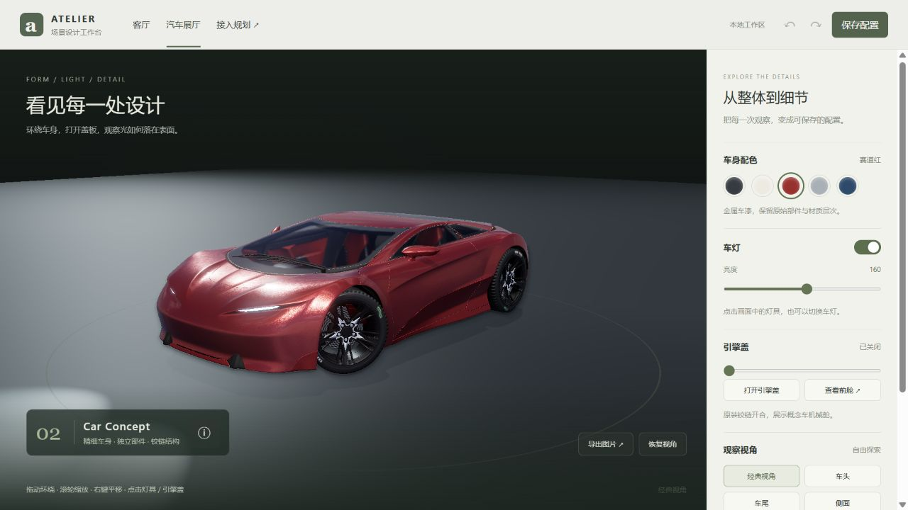
02 / C24–26
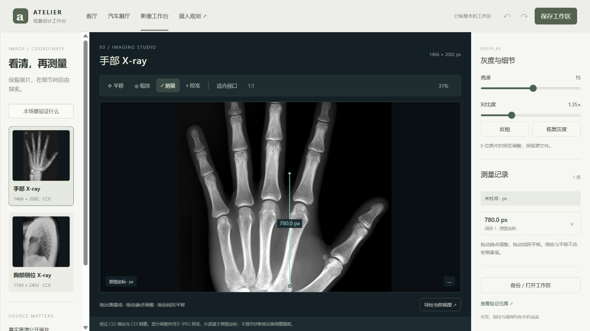
03 / C22–23
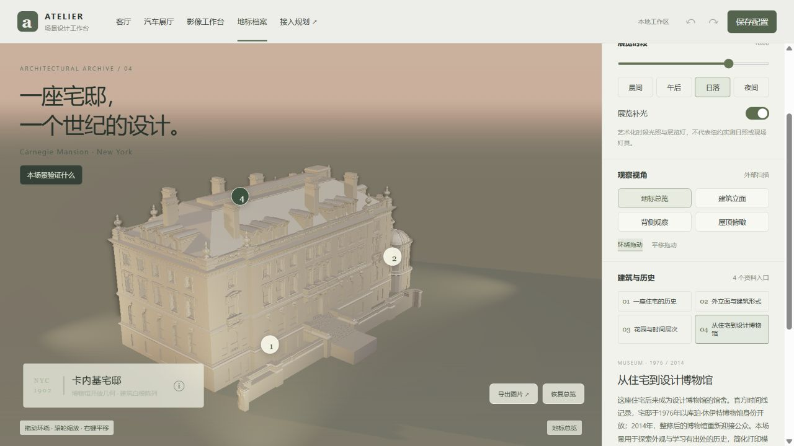
04 / C12–14
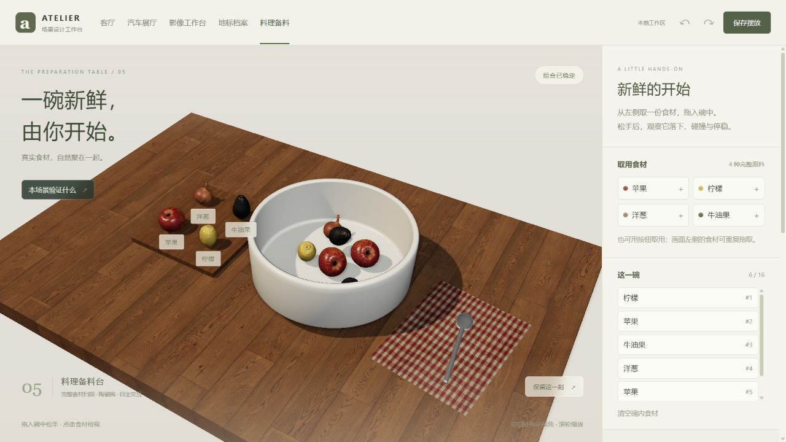
05 / C20 / C29
06 / C27–28
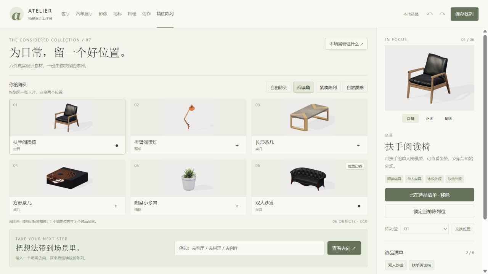
07 / C05 / C33 / C35
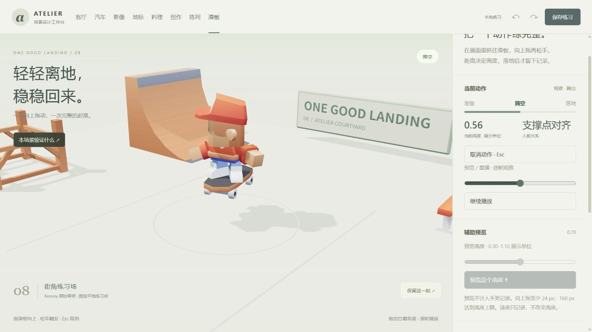
08 / C32
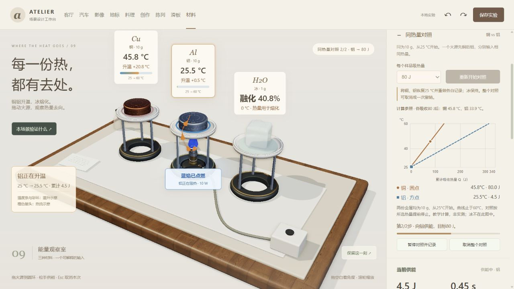
09 / C21
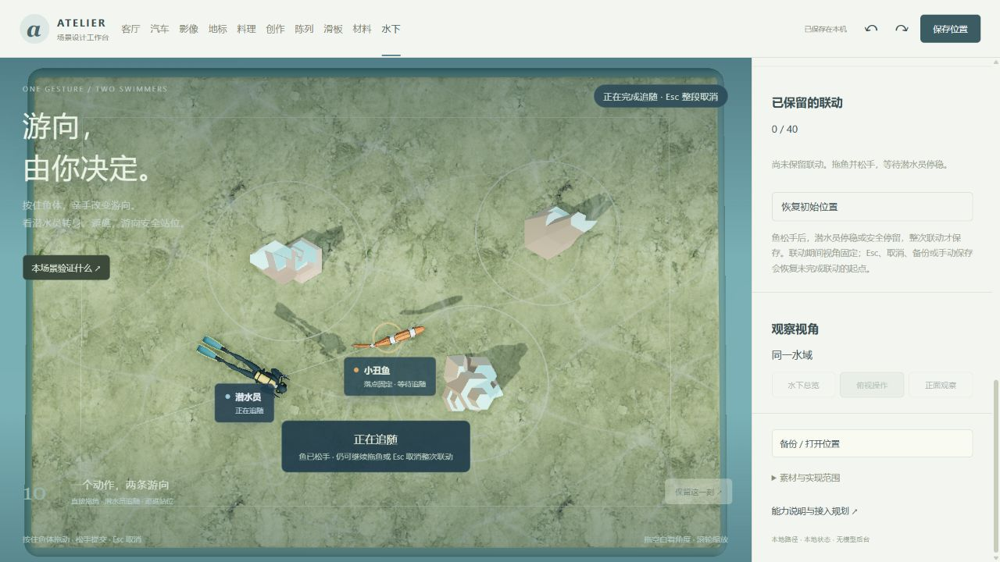
10 / C30–31
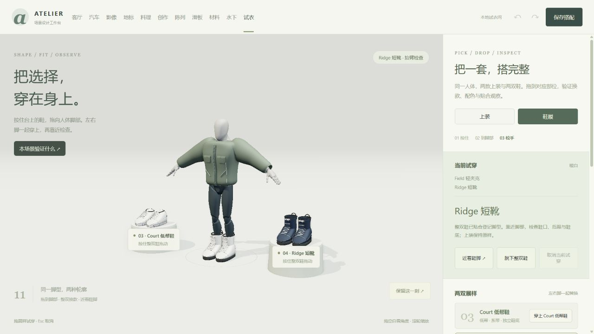
图均为我们既有实际运行截图，不是源模型输出；具体输入、完整状态与已验/待验见各场景说明。试衣的两个入口算同一场景，新桌工作台是独立深化研究。
小屏幕可横向滚动表格；每行末尾可进入对应场景。
| 场景 / 入口 | 已经可以做什么 | 主要验证什么 | 明确边界 |
|---|---|---|---|
| 01客厅设计 ↗ | 家具移动、旋转、等比与独立尺寸、复制、材质、灯光、A/B 方案。 | 直接编辑后对象关系和光影随状态变化；整段撤销与完整方案恢复。 | 6 × 5 米登记房间与有限家具；设计光照，不是工程日照。独立新桌支撑未接入客厅。 |
| 02汽车展厅 ↗ | 车漆、灯组与实际灯光、原铰链引擎盖、多方向观察。 | 点击部件触发正确关联；开度、外观与相机状态可恢复。 | 授权概念车视觉探索；机械舱为原资产简化结构，不作量产车型维修或工程判断。 |
| 03影像工作台 ↗ | 真实 X-ray 缩放、平移、显示调整、原图坐标两点测量。 | 缩放前后端点与长度保持；每张原片独立保存视口和标注。 | 默认像素；毫米须用户已知参考校准。不是诊断工具或临床精度证明。 |
| 04地标观察 ↗ | 白模环绕、平移、预设视角、光照设计与来源知识热点。 | 同一建筑在不同方向保持一致；观察状态与有限知识入口。 | 官方简化外部打印白模，无源纹理、完整室内或可靠物理尺度。 |
| 05料理备料 ↗ | 完整食材拖入碗、近似沉降、数量/实例、受控浮起检查与归位。 | 对象身份、组合和稳定状态；受阻反馈、取消与可靠保存。 | 四种带皮食材、最多 16 件、近似刚体包络；没有切丁、烹饪、称重或营养计算。 |
| 06局部创作 ↗ | 真实图像框选、纹理印章、有限参数笔刷、两图层与逐笔撤销。 | 来源选区与作用范围可见；每笔独立恢复、作品可保留。 | 二维像素取样和绘制；不自动理解猫毛或执行任意风格生成、三维材质重建。 |
| 07精选陈列 ↗ | 六件素材交换/锁槽、显式偏好策展、选品、九任务往返、整套备份。 | 安排与理由可解释；返回保留陈列，十份稳定原文选择恢复。 | 有限中文登记去向；独立工作台状态，不自动植入商品或续播未完成过程。 |
| 08滑板练习 ↗ | 板面向上拖动、骑手/板有限起落、落地记录与重播。 | 手势触发联动过程；完成才入账，取消与恢复不留下半段动作。 | 固定平地与有限骨架轨迹；没有膝脚 IK 或真实运动物理求解。 |
| 09材料教学 ↗ | 热源三接口拖放、铜铝温升/冰熔化、同热量顺序对照与热账。 | 鼠标作用目标与过程反馈；同输入热量的不同计算响应、稳定结果恢复。 | 10W 已吸收功率、均匀零散热等教学假设；读数非实测，金属保持固态。 |
| 10水下联动 ↗ | 鱼体直接拖动，潜水员有限速度转向/绕礁/停留，双主体整次恢复。 | 直接操控与关联响应；安全路径、合法落点、受阻与稳定状态。 | 固定水层、单鱼/单潜水员、三登记礁石；目标间距为场景单位，不是海洋或生物仿真。 |
| 11三维试衣 ↗真人上装参考 ↗ | 上衣拖到胸腹、成对鞋履拖到足部、独立衣鞋槽、配色/两静态姿态；真人图像研究比较。 | 合法适配、错位拒绝与整套恢复；真人生成外观的可见问题与实拍依据。 | 固定人体/有限衣鞋；真人预训练参考不证明合身、尺码或商品保真。试衣/真人暂缓扩展，C19 未接入。 |
04 / CLASSIFY THE WORK
功能数量、画面质量、业务完备和真实能力突破，应各自评价。
拾取与投影、工具状态、合法约束、动作反馈、取消/撤销、结构化保存恢复。
价值：用户知道正在改什么，操作错误能恢复，成果能继续使用。
高质量素材、PBR/HDR、阴影、骨架表现、预设观察、路线/读数提示和比较画面。
价值：帮助理解变化与比较成果；漂亮画面本身不增加已验证能力。
对象与许可注册、项目协议、备份/选择恢复、任务往返、多窗口冲突、异常和性能。
价值：作品与工作流持续可用。真实商品、库存、价格、订单与授权仍需接入。
跨独立模型的支撑关系、条件性柜架扩展、未知视角/任意照片/真实适配等研究。
价值：检验规则能否推广；新对象与拒绝样本需独立验证，不能靠改参数充当突破。
05 / REUSABLE FOUNDATION
当前是各场景编辑器与有限聚合层；需要统一平台时，再根据所选任务整理共同接口。
FOUNDATION DEEPENING / SUPPORT & RECOVERY
把逐件手写约束推进为声明范围内的新资产共用规则；作为独立研究保留。
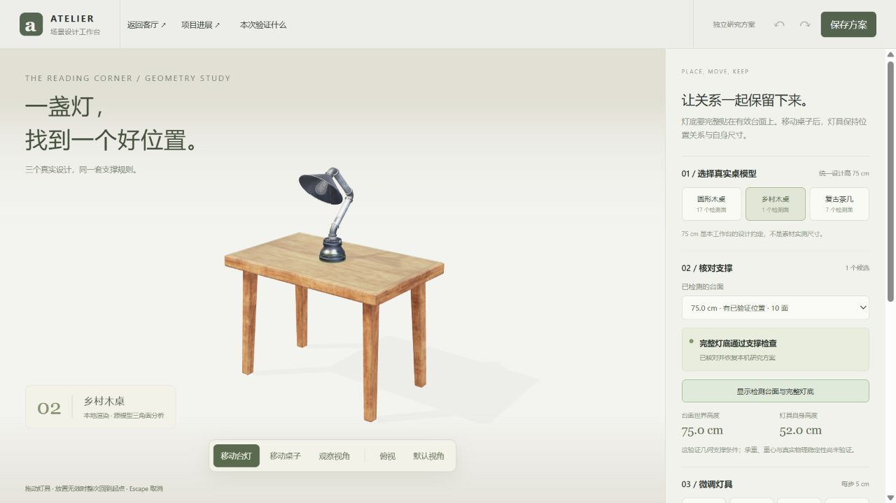
三张真实静态桌，共用冻结规则提取水平候选面。完整圆底灯加 2 mm 边距，通过覆盖和扫掠判断合法关系；多个候选必须明确选择，越边或取消整次回滚。
支持灯具平移/保守转灯、整桌平移、离散转桌与宽深提交、撤销与严格备份重验。0.18.2进一步区分已保存与草稿，离开前可保存、备份或继续编辑。
失败也保留：25 个候选、22 个推荐失败；首轮夹装灯的小接触面虽满足数学覆盖，仍因用途语义被排除。换圆底灯重验同三桌，不算新的未知测试集。
登记静态资产，无任意模型上传；几何支撑不判断承重/重心。尚未接入客厅旧规则、九任务或十份整套备份，不增加第12场景/第37能力。
打开独立桌灯工作台 ↗USE CASES / FROM EXPERIENCE TO TASK
以下是可扩展产品方向。现有工作台验证了交互样本，尚不代表商业服务已经完成。
任务：摆家具、比尺寸与配色、调整照明，再保存可继续编辑的方案。
已有：客厅与桌灯基础、A/B比较、撤销恢复。
按需补齐：真实尺寸商品、用户房型、几何接入、交付格式与资产授权。
看客厅 ↗任务：从不同角度看产品，试外观并操作真实部件。
已有：汽车颜色、车灯、原铰链引擎盖与配置。
按需补齐：目标商品资料/部件、商业许可、真实配置；购买需要完整目录与订单流程。
看展厅 ↗任务：观察建筑与出处，或在相同输入下比较材料响应。
已有：地标热点、热量账、原图测量与清楚边界。
按需补齐：课程与资料审核、真实标定、适用模型和学习效果；教学计算不等于实测。
看教学实验 ↗任务：从图像取样形成工具，局部绘制，再比较与保留作品。
已有：可见选区、纹理印章、参数笔刷与两图层历史。
按需补齐：目标创作任务、素材版权、更多工具；任意语义生成需另选模型和验收。
看创作台 ↗任务：策展选品，进入相关工作台，带着稳定成果返回。
已有：六槽陈列、九目标、十记录备份与部分旧写入保护。
按需补齐：用户项目协议、权限、多设备同步、所需故障与并发条件。
看任务陈列 ↗源研究另提出界面适配、教程恢复及交互环境的研究愿景；其可见画面不证明已具备真实业务后端。本项目没有接入原模型或构建智能体训练服务。
VALUE FOR YOU / A REUSABLE STARTING POINT
是否值得产品化，要看目标用户能否更好完成任务、结果是否可信、内容与资产成本是否可接受。这些需要在具体产品里验证，现有数量和画面不能代替用户价值证据。
PAGE DIRECTORY / READ · TRY · VERIFY
首页也已关联总览、来源、规划、独立研究和全部11场景；这里给出每个页面的阅读目的。
备份锚点定位按钮，点击后才打开十记录备份；试衣、真人与新桌不在其中。
READ THE NUMBERS CORRECTLY
36 项来自已核查的 Solaris 公开材料清单，既有实际演示，也有文字或设想；35 项表示 ATELIER 已在声明的有限范围接入相应操作。
它不能证明已复现 Solaris 的开放生成能力，也不是“产品完成了 97%”。设备、可靠性、通用输入、物理精度、商业素材与业务流程仍须分别验收。
C19 购物联动尚未接入，当前暂停推进。真实商品目录、商业授权、尺码/库存/价格、订单和购买确认都需要独立设计；选品清单与换装预览不能当作完整购物。
对照完整研究与接入清单 ↗06 / EVIDENCE & LIMITS
0.18.2当轮新增19项草稿比较与9项实际app.js的VM协调检查，当轮386项产品与16项仓库检查通过。这里保留历史验证，图的发布不表示所有场景重新实测。真实页面、公开完整方案、模拟故障和研究分别留证。
首版理解汇总通过16项仓库检查、143条本地链接/锚点及首页入口检查，记录对应提交3d747bf的图与页面。首版历史记录 ↗。当前版本补入14份源原图、全部11个场景及两个补充入口实景，新增分区切换、放大与原图目录；当前效果展示检查 ↗单独记录发布与浏览器核查。没有新增功能，未重做全部场景交互验收。
0.18.2当轮386项产品Node测试与16项仓库检查通过。新增28项覆盖草稿与确认保存的值比较、撤销重做、迟到保存不能跳转、备份不清状态、导航排除、候选面等待和返回保护；原几何与存储回归保留。
新协调检查用VM执行实际app.js，页返回事件、存储异常与手势故障仍为模拟。孔洞等坏几何也是专门夹具。
右移5cm显示未保存，撤销回已存状态、重做回草稿，全文分别精确一致。继续编辑保留草稿；先备份停留本页且存档不变。保存后离开再冷返回，全文等于刚保存版本；待选台面禁保存/备份。打开不同备份仍显示未保存，明确保存后才清状态；直接离开不写草稿，最终原797字节存档恢复并重开核对。
体验草稿保护 ↗ · 真实离开提示 ↗ · 专项记录 ↗ · 完整方案对照 ↗
实际浏览器返回经过冷加载，未证明bfcache。刷新关闭的原生弹框、移动端和故障尚未验证，后续按实际需求另验；请求390×844后实测仍1280宽，未计作本轮窄屏通过。备份只核对全文与链接，未新增下载落盘。
A保存后B旧页拒绝覆盖，备份全文精确保留B草稿；检查后A再次保存，使B旧检查失效。重新检查并打开最新，撤销回B草稿、重做回A新存档，完整公开JSON逐字一致。结束后原存档还原并实际重开核对。
体验保存保护 ↗ · 实际提示画面 ↗ · 0.18.1专项记录 ↗ · 公开全文对照 ↗
该轮是同一浏览器两个标签顺序保存；比较原文并写后读回不是原子锁。备份文本与下载链接已核对，未新增实际下载落盘验收。
三桌实际拖灯、越边释放回滚、整桌变换后的关系保持、保存重开完整JSON一致。797字节下载全文一致，跨桌打开文件恢复完整方案；超限文件保留原文本。
打开支撑工作台 ↗ · 实际画面 ↗ · 0.18.0完整记录 ↗
请求390×844、实测页面宽375的布局与完整模型镜头适配已核查；触摸、真实中断和长期性能另验。几何支撑不判断承重或重心稳定性。
实际下载195,925字节与全文一致，编辑后195,926字节下载/复制也一致。文件重开、超限保留文本、单展厅恢复/还原，以及九页稳定存档重开已核查。
备份真实界面 ↗ · 展厅导航 ↗ · 0.17.1完整记录 ↗
影像换画布时只平移显示中心，同尺寸重开完整JSON保持。核查结束后十份保存原文完全还原；不称0.17.1整套恢复全部九页后的验收。
整套恢复全部九页后的重建、进行中过程转场、真正同时写入、真实存储故障/容量，以及独立新桌按住时Escape、各场景尚未完成的失焦/捕获中断专项，均保留在对应未验证记录中。
完整断网、触屏/其他浏览器、设备性能和长期运行也未全部验收。后续选择具体产品及使用设备时，再补齐相关检查；当前不继续扩大基础专项。
07 / OPTIONAL EXTENSIONS
以0.18.2作为当前可复用原型基线。当前新桌成果已保留，其余方向是储备，不代表已排期。后续按“具体用户任务 → 选择已有能力 → 说明缺口 → 独立验证 → 可用交付”推进。
POTENTIAL USES
潜在用途包括空间方案比较、概念产品展示、教学交互、素材创作与受控外观研究。进入商业使用前，需匹配真实业务、素材与组件许可、验证数据和交付条件。
从一个已有任务开始 ↗